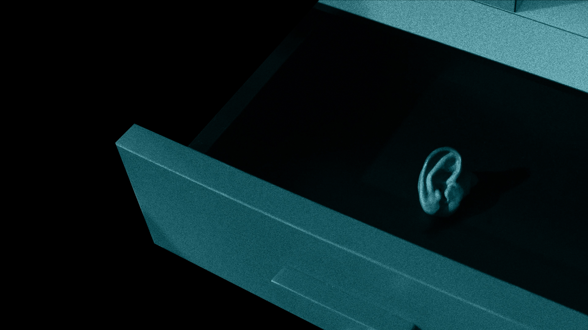

우리는 처음부터 단순히 향수 광고를 만들겠다는 생각을 하지 않았습니다. 대신, Tamburins 브랜드의 이미지를 강렬하게 각인시킬 수 있는 요소를 고민했고,
그중에서도 영상으로 풀어낼 수 있는 스토리텔링에 집중했습니다. 초기 기획 단계에서 그녀는 ‘Collector’였습니다. 이 캐릭터는 뛰어난 안목과 예술적 감각을
지닌 인물로, 고고하면서도 자신만의 기준에 부합하지 않는 작품에는 전혀 관심을 두지 않는 독특한 성격을 가지고 있었습니다.
특히, 그녀는 정당하지 않은 방법으로도 물건을 수집하는 대담하고 위험한 면모를 지닌 인물이었습니다. 이는 캐릭터를 더욱 미스터리하면서도
매혹적으로 보이게 했습니다. 우리는 제니라는 배우의 매력을 극대화하기 위해 그녀에게 기묘한 행동과 독특한 춤사위를 부여하고, 값비싼 수집품을
검정 비닐봉지에 담는 상징적인 행위를 설정했습니다. 여기에 액션 연기까지 더해, 다층적이고 입체적인 캐릭터로 완성도를 높였습니다.
의상과 메이크업에서도 제니 본인의 아이디어를 반영해 캐릭터의 매력을 한층 더 끌어올릴 수 있었습니다.
총 3일간 이어진 촬영은 저를 비롯해 함께 작업했던 모든 스태프들에게 도전의 연속이었습니다. 난이도가 높은 액션 장면과 실험적인 촬영 기법은
현장의 긴장감을 고조시켰고, 모두가 한마음으로 협력하지 않았다면 결코 쉽게 이루어질 수 없는 작업이었습니다.
촬영 마지막 날 새벽, 제니가 촬영을 마치고 밝은 웃음으로 인사했을 때, 우리 모두 비로소 긴장이 풀리며 함께 웃을 수 있었습니다.
특히 마지막 테이크를 끝내고 조감독과 눈이 마주친 순간, 우리는 울컥한 마음에 서로를 안으며 그 새벽녘의 감격을 나눴습니다.
그렇게 모두가 혼신의 힘을 다해 완성한 이 프로젝트는 저에게 더할 나위 없이 소중한 작업으로 남았습니다.